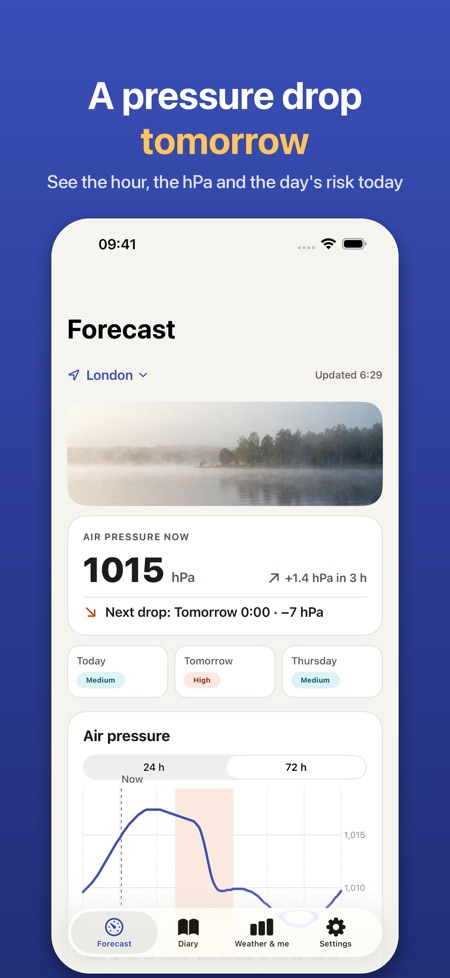
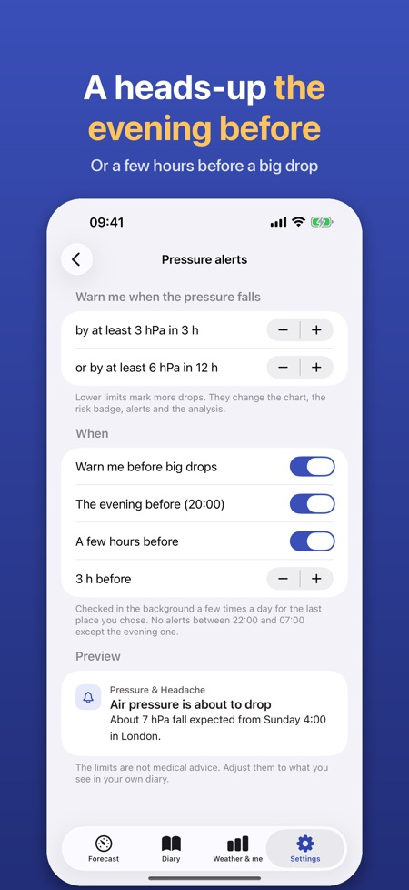
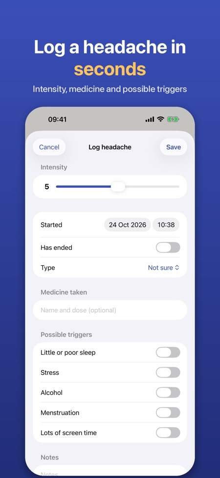

Many people report headaches or migraine when the air pressure falls quickly. The app shows pressure hour by hour, highlights big drops and helps you see whether the weather is linked to your headaches.



Many people report headaches or migraine when the air pressure falls quickly. The app helps you check whether this applies to you, but gives no medical conclusion.
By default at least 3 hPa in 3 hours or 6 hPa in 12 hours. You can adjust the limits.
Yes, with Pro: a notification the evening before or a few hours before a big drop.
Intensity 0 to 10, start and end, type, medicine and whether it helped, notes and triggers such as sleep, stress, alcohol, menstruation and screen time.
From Apple Weather. Your diary stays on your iPhone.
Pro is a yearly subscription or a one-time lifetime purchase. Without Pro you keep the 24-hour chart and the diary.
No. It gives no medical advice or diagnosis. If your headaches change or are severe, contact a doctor.
Many people report headaches or migraine when the air pressure falls quickly. The app shows the air pressure hour by hour, highlights the big drops and helps you see whether the weather is linked to your headaches.
HOURLY AIR PRESSURE
• Chart of the air pressure for the next 24 hours (72 hours with Pro) for your location or a city you choose
• Drop zones highlighted: at least 3 hPa in 3 hours or 6 hPa in 12 hours – limits are adjustable
• A simple daily risk badge (low, medium, high) based only on the pressure change and explained in the app
• Humidity and temperature change too
HEADS-UP IN ADVANCE (PRO)
• Notification the evening before or a few hours before a big pressure drop
• The app checks the forecast in the background for the last place you chose
HEADACHE DIARY
• Log with one tap, also straight from an alert: intensity 0–10, start and end, type, medicine and whether it helped, notes
• Possible triggers: sleep, stress, alcohol, menstruation, screen time
• Month calendar with pressure drop days, entry details with the pressure around the start, and an overview of the triggers you logged
DOES THE WEATHER AFFECT ME? (PRO)
• After 30 days of diary, your headache days are compared with that day's pressure fall: simple counts and charts, not a medical conclusion
• Doctor report: a PDF for the last 30 or 90 days or your own period
WIDGET (PRO)
• Pressure now, the trend and the next big drop on your Home Screen or Lock Screen
PRO
Yearly subscription or a one-time lifetime purchase. Without Pro you keep the 24-hour chart and the diary. No account, no ads.
PRIVACY
Your diary stays on your iPhone. Only anonymous usage statistics, which you can switch off. Weather data comes from Apple Weather.
The app is not a medical device and gives no medical advice or diagnosis. If your headaches change or are severe, contact a doctor.